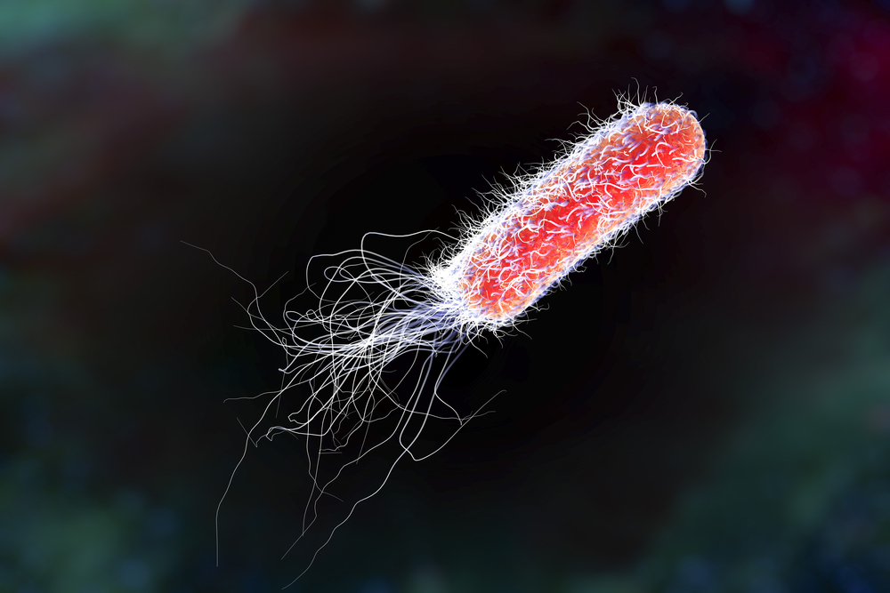

MICROBE OF THE MONTH

Pseudomonas
The genus Pseudomonas comprises a group of nonmotile, Gram-negative, strictly aerobic organisms found in
soil, water, and marine environments. They are straight or slightly curved bacilli that are motile,
catalase-positive and grow well over a wide range of temperatures.They utilise polyalcohols, amino
acids, and organic acids as carbon sources.
Pseudomonas is of biomedical, ecological, and industrial importance. Pseudomonas spp. are used in
agriculture and as bioscrubbers to degrade diverse organic compounds in polluted waters and air. Some of
these are human pathogens, but some are also beneficial. For instance, Pseudomonas aeruginosa is a major
pathogen of humans and is a well-known biofilm producer, making it an interesting in vitro model to
understand biofilm formation while Pseudomonas putida is a lignin-degrading microbe with potential in
valorizing lignin into value-added compounds.
Pseudomonas is one of the most studied bacterial groups. It was first identified by Migula (1894).
Pseudomonas is gram-negative, slender, rod-shaped, polar-flagellated bacteria. It is an aerobic
bacterium that belongs to the family of Pseudomonadaceae. The morphological feature. Pseudomonas are
ubiquitous pathogens that can be found in soil, water, plant, and animal tissue. Different species of
Pseudomonas affect both humans and plants.Pseudomonas syringae pv. tomato DC3000 (PTO) was the first
Pseudomonas phytopathogen to be sequenced.